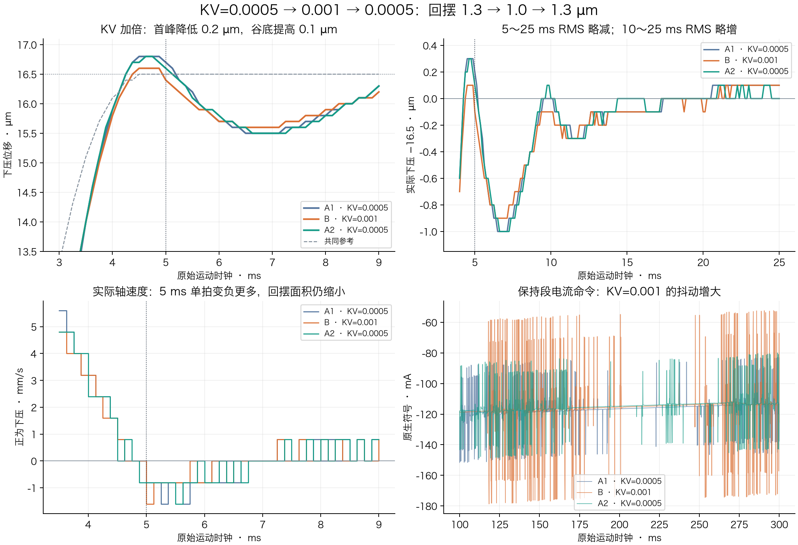

NYCe 4000：125 µs 参数能力、当前实现与下一步顺序
2026-09-11。只读研究；未连接控制器、未访问本机服务、未写轴参数、未运行实验、未部署。核对官方 V54 原始 HTML、54.2 SDK、当前实验源码及已存在的最新记录。网页检索未取得比本地版本材料更直接的证据，以下技术结论均来自列出的本地材料。参数矩阵见正文，引用文件的SHA256与行号见来源索引。
NYCe 官方支持每拍写 KP、KI、KV；当前实验尚未实现逐拍增益。最值得新增的是到位前后的小范围平滑 KV 调度，其后才是单独 KP 调度。KI 先研究积分状态连续性，再考虑调度。 所有参数都逐拍开放，会同时引入耦合与辨识困难；“能写”并不自动成为有用的实验自由度。
三层证据与当前基准
- 官方接口支持： 原始 fast 表列出 23 项，包含 KP/KI/KV、全部六种前馈系数、FF adjustment 和 additive P/V。SDK 交叉核对了显式
@fastDataAccess TRUE。普通参数默认不支持 fast，不能从名字猜测。原始完整表、SDK 默认规则 - 当前实现： KV 在开始采样前由 owner 写入编译时固定值；collector 每拍读取并检查它不变。SampleStart 正常非零快写只有
FEEDFORWARD_ADJUSTMENT，没有 KV/KP/KI 逐拍表，也没有逐拍ACTUAL_*_GAIN记录。P/V 由已缓冲 spline 执行，不能把 P100/V101 表误称每拍调用普通位置写 API。KV 设置与准备读回、每拍守恒与 FF 写入 - 本机实际验证： H48 使用整段临时 KV=.0005、每次恢复0；实测结果支持这一组合的有限重复，未验证逐拍 KV/KP/KI。最新十次均 COMPLETE，原 H48 六次回摆含 .7/.5/.6/.6/.5/.6 µm，四个 H 时刻/宽度候选没有改善回摆。不能把其中两次 .5 µm 当新候选收益或稳定 .5 µm。最新完整交接
保留组合 ID 3940afb79da4fac46595954913b322436c30ad2de49cd01d371657ae3fb55c7d：19 µm、前40拍5 ms、后60拍恒位，H−48 mA/中心4.75 ms/半宽1.5 ms，E+32 mA/中心3 ms/半宽1 ms；负载 FF23、原生 KFA=.000036、应用速度 FF=.0051、应用平滑摩擦=.0133、KV=.0005。保持300 ms、返回50 ms。最新起点 raw+.0065 mm 是已存实验起点，不能代替未来 fresh 准入。
已存最终原生快照：KP=4.903831567639214、KI=33.43297501097796、KV=0，LLF开启且 lead/lag=26.60511617632478/239.446045586923 Hz；controller type0，PVL约32 kHz、node8 kHz；微分估计 method0、平均样本数1；standstill/halfway六项均0。最终 KFA=0 是已恢复后的状态，不能写成实验过程 KFA=0。积分输出约+.304372 A，说明当前接触预压存在非零积分偏置；不据此证明所有偏置来源。已存快照
KP、KV、KI 的控制含义
已重新视检官方标准控制框图。令 e=x_ref−x_actual，图中 KP 支路为 KP·e，KV 支路为 KV·de/dt；两支路相加后，既直接输出，也进入 1/s 和 KI 的积分支路。因此固定增益、理想未饱和的标准图可写成 u_PID=(1+KI/s)(KP+KV·s)e。这不是本机含 LLF、离散微分、限幅、状态管理的完整固件模型。
| 参数 | 可以改变什么 | 逐拍化的价值与局限 |
|---|---|---|
| KV | 位置误差微分的反馈强度 | 对同一时刻不同实测误差会有不同修正，适合研究到位附近阻尼。运动中是近似 KV·(v_ref−v_actual)；仅参考速度为0时才近似纯负速度反馈。加 KV 可能增加量化噪声和总命令波动，不能保证降低回摆。 |
| KP | 位置误差比例反馈；也改变进入积分支路的量 | 可研究末段位置刚度与回摆之间的折中。切换时若误差非零，比例输出会变化；大 KP 可能激发接触共振，降低 KP 也可能增大欠跟。不是单独一条补偿电流。 |
| KI | 图示积分支路的增益，SDK 单位 rad/s | 控制累积偏差与慢恢复，和 KP/KV 及已有积分状态耦合。不能因为5 ms短便断言无效，也不能把 KI=0 等同于“无扰冻结积分”。 |
SDK 单位为 KP cout/pu、KV cout·s/pu、KI rad/s。精确定义。当前应用把 cout 和 pu 按 A、mm 记录；别把通用SDK在所有轴型的 cout 都写成安培。
KI 的未知项是实现前置问题。 对常增益，保存“积分输出”或保存“积分器之前的累计状态”可得相同响应；当 KI 改变时，两者可能导致保持原输出、按新 KI 缩放输出或另外的状态处理。当前官方参数说明未规定 fast 写 KI 后的无扰切换契约，也没有本机 type0 drive 的逐拍实测证明。因而 KI→0 是否保留偏置、重开是否跳变、故障恢复是否延迟更新，都应标为未知；不能借 MCU 反编译伪代码代替当前 drive 固件证明。
此前回程故障的积分变化分析与固定条件下的 KP·KI·∫e 近似相符，只支持该历史条件下的诊断；并未验证 KI 切换状态。现有 SAC_VAR_INTEGRATOR 单位是 cout，可用于观测积分输出，不能当作未缩放内部状态。积分变量、阈值与积分开关语义
KV 必须连同现有 LLF 看待。 官方说明 LLF 可代替理想微分器取得超前作用并减轻高频噪声；KV=0 并不等于系统没有阻尼。NY4120/4125/4130/4140 的 LLF 和 KV 可以独立设置，DriveLink 则在 LLF 开启时忽略 KV；本机 NY4120 不能套用后一条。第一次逐拍 KV 比较应固定 LLF 和微分估计，才能识别 KV 调度效果。LLF解释与驱动差异、微分算法
参数矩阵
下表省略共同前缀 SAC_PAR_。“是”指官方 fast 读写支持；“无”指不在该清单且 SDK 无 fast 标记，不等于所有普通API调用场景都被禁止。FF_ADJUSTMENT 的准确枚举名是 FEEDFORWARD_ADJUSTMENT。
| 参数 | 官方fast / 单位 | 当前实现与本机证据 | 对本任务的定位 |
|---|---|---|---|
| KV | 是 / cout·s/pu | 启动前固定.0005；每拍守恒，结束恢复0；未逐拍变更 | 第一新增候选：末段平滑调度；先验证写入、有效读回与恢复。 |
| KP | 是 / cout/pu | 固定4.9038316；无逐拍句柄/表 | 第二新增候选：单独小幅相位调度，保持KI不变并记录积分。 |
| KI | 是 / rad/s | 固定33.432975；无逐拍表 | 积分状态切换语义验证后再候选；不先做0/原值开关。 |
| FEEDFORWARD_ADJUSTMENT | 是 / cout | 已在SampleStart合成并快写，raw/CSV/SQL有写入和读值 | 最成熟的动态通道：可优化E/H形状与联动，不再只扫已失败的H时宽。它叠加总输出，非强制实际电流。 |
| KFA | 是 / cout·s²/pu | 原生.000036整段固定、每拍检查、结束恢复；有本机实测 | 可研究惯性前馈，但先固定它做KV对照；避免同时把同一a项又加入FF。 |
| KFV | 是 / cout·s/pu | 原生0；应用.0051×参考速度已并入FF | 对现有参考，逐拍KFV与等效速度FF表高度重叠；不必先增原生写通道，原生/附加路径相位等价尚未认证。 |
| KFC | 是 / cout | 原生0；应用.0133×tanh(v_ref/.2)已并入FF | 原生图是参考速度sign项，应用为平滑tanh；不能不加核验就替换或双算。 |
| KFJ | 是 / cout·s³/pu | 原生0，准入要求0；未逐拍实测 | 仅在模型/实测支持jerk相关残差时研究；连续轨迹节点与ZOH边界先复算。 |
| KFSNAP | 是 / cout·s⁴/pu | 原生0，准入要求0；未逐拍实测 | 后置。高阶导数对轨迹分段边界敏感；当前cubic spline的段内snap为0，不能据此忽略接缝。 |
| KFST | 是 / cout | 原生0；预压有积分偏置，加载FF为位置相关项 | 可用于模型静态偏置；随时间写KFST又近似新增偏置FF，不等于位置相关FF23。 |
| ADDITIVE_POS | 是 / pu | 快句柄存在但要求0；当前实际轨迹来自spline | 能改变目标，不是“自动抑振”。须与主轨迹共同算位置/FE/速度/返回与FF，未获本机非零波形验证。 |
| ADDITIVE_VEL | 是 / pu/s | 快句柄存在但要求0 | 可改变速度设定；要验证和ADDITIVE_POS、spline、前馈一致性，不可独立乱配P/V。 |
| PFC_FORCE_INPUT | 是 / N | 当前播放器不使用PFC | 软件测量力输入，非目标力；无法消除模拟测力迟延/同值段，暂不转此路线。 |
| PFC_SOURCE_SELECTION | 是 / 枚举 | 当前播放器不使用PFC | 反馈源选择，不作为运动中的优化波形。 |
| CC_KP / CC_KI | 是 / V/A、rad/s | 电流环40/90固定，未逐拍调 | 内层电流环不列为自由调参变量。 |
| CC_MAX_INTEGRATOR_LEVEL / CC_SAT_LEVEL | 是 / 电流环限制 | 原配置保持 | 不用放宽限制换通过。 |
| ASYMMETRIC_SATURATION | 是 / BOOL | 原配置保持 | 改变输出限幅策略，不作为回摆优化波形。 |
| MAX_DYN_POS_ERROR / MAX_STEADY_STATE_ERROR | 是 / pu | 原配置与原生运动保护保持 | 保护项，排除调优自由度。 |
| OPEN_LOOP_VALUE / OPEN_LOOP_RAMP | 是 / cout、cout/s | 开环值0，当前位置闭环 | 不切开环做本轮抑振。 |
| PFC_KP | 无 / pu/N | 未进入当前播放器 | 力误差转位置修正的增益，与普通KP不同；不能套普通KP fast结论。 |
| LLF_SWITCH / LLF_LEAD_FREQUENCY / LLF_LAG_FREQUENCY | 无 / BOOL、Hz | 整段固定1、26.605/239.446 | 有用但按每次固定配置研究；系数更新代价、相位及滤波状态未知，不先每拍写。 |
| P/I/D_GAIN_AT_STAND_STILL及P/I/D_HALF_WAY_VEL | 无 / 对应增益、pu/s | 六项0；未使用内建调度 | 官方内建按SPG参考速度调度，非按实际回摆速度；后60拍参考为0，不能只覆盖5–10ms而随后降噪。 |
| VELOCITY_ESTIMATION_METHOD / NR_OF_SAMPLES | 无 / 枚举、样本数 | 固定0/1 | 与KV噪声/相位强相关，后续单独固定配置研究，不能把平均长度增加说成无延迟降噪。 |
| LPF / notch参数、FEEDFORWARD_ADDITION_POINT | 无 / 滤波配置、枚举 | 当前不改；FF addition point=0 | 模态明确后有价值；改变滤波/加法点会改变整条控制路径，需单独验证。 |
| THRESHOLD_VELOCITY / INTEGRATOR_SWITCH_OFF_MODE / CLEGG_ENABLE | 无 / 阈值、枚举、BOOL | 当前不改 | 改变积分启用/复位语义；不能代替已验证的无扰KI调度。 |
| MAX_INTEGRATOR_LEVEL及standstill最大积分限制调度 | 无 / cout等 | 当前位置环限值保持；type0 | 属限值。官方最大积分限制的速度缩放只在MCU PVL执行，不能认为当前drive type0支持相同效果。 |
| IFC / dither / switched control | 无 / 各增强功能配置 | 当前不改 | 缺乏针对性收益证据；dither会加输出波动且官方说明controller_out不包含该信号，SCM会关输出，不适合作当前持压调优捷径。 |
矩阵依据：PID与六种FF的SDK定义、FF adjustment、additive、PFC、电流PI。
应用公式精确为 load_ff·relative + velocity_ff·v_ref + friction_ff·tanh(v_ref/.2)，另加逐拍residual；KFA由原生加速度前馈路径提供。原生系数逐拍化通常不是增加一种全新的物理补偿，而是改变计算发生的位置、时序及记录方式；原生与应用路径完全等价仍需验证。 当前合成模型、原生FF零值准入
内建增益调度的官方式为 g_eff = g + (g_standstill−g)/(1+|v_SPG|/v_half)，每种P/I/D分别配置；该式适用于有效halfway配置，不把当前halfway=0直接代入。它看的是SPG速度。同为零参考速度的预压、到位后、长期保持都可能落入同类增益，不能仅凭该机制区分短时回摆窗口和长期低噪声保持。官方公式、最大积分限制只限MCU与其他增强功能
每125 µs究竟意味着什么
初始化阶段打开fast句柄，不能在sample回调开关句柄；UdsxReadData / UdsxWriteData只允许在sample函数调用。表先缓冲到原生侧，按trajectory_tick读取；不靠网页、Node.js、Python或远程RPC每125 µs写一次。SDK生命周期规则
官方“SampleStart写本sample、SampleEnd写下sample”描述节点处理顺序。本机node8 kHz、drive PVL32 kHz；它不证明驱动内部哪个31.25 µs子拍锁存新增益，更不证明电流、机械位置和模拟力同刻响应。API成功、参数读回、ACTUAL_P/I/D_GAIN遥测、真实驱动响应是不同证据层。当前collector先读后写FF，因此同一行read/written按读写顺序解释，不能将它们误当同一生效时刻。官方时序、实际增益变量定义
API写入类型是double，但固件KP/KI/KV和FF为FW_FLOAT；BOOL与PFC_SOURCE_SELECTION枚举也在官方fast表，不能笼统说“fast只支持浮点”。每个新增通道都要核单位、量化、状态与范围。LLF等无fast标记；官方允许API表包括普通SacWriteParameter，但没有给出本机逐拍调用这些普通参数更新的时间预算或状态连续性保证。普通API允许表
PFC 运行时映射：到底更新什么
PFC 的可借鉴之处是按反馈生成受限的位置增量、按段切换控制目标和明确退出；现有证据不支持“PFC靠每拍修改KP/KI/KV”这个说法。 fast表只是平台能力，下面单独核对PFC实际计算路径。
证据版本是知识库固定的 n4kstdmotiond，二进制SHA256 adc0df16fe7e3378e9a4a5ae8b453f89c827811be9c4f9de7ebbd33198f20a6c。材料是Ghidra恢复的C样式伪代码，并非厂商原始C；本次重新读取了恢复输入hash记录和函数文本，未重新核验那个原始构建归档原二进制，也未读取现场运行二进制或drive固件。工具链另存二进制的历史hash不同，不能混用。输入hash记录、证据来源与限制
1. 初始化配置与实时状态不是一回事
| 时机 | 读取/写入对象 | 已核对证据 |
|---|---|---|
| 应用准备 | 传感器槽/模拟通道、方向、1或2次平均、N/V比例 | ConfigurePfcSoftLanding的1003–1033行配置与读回传感器；官方传感器配置只允许IDLE/INACTIVE/READY。 |
| 应用准备 | PFC_SOURCE_SELECTION、PFC_KP、力阈值 |
应用1035–1065行仅在准备时写。PFC_KP参数映射函数将ID 0x09e8a301写至DAT_00122ab0；实时分支之后读取该值。 |
| 应用准备 | 力段：segmentNr/endForce/rampTime/plateauTime/positionRange/forceControl/generateEvent |
应用1068–1078行构建并缓冲；SDK SAC_PFC_FORCE_SEGMENT1705–1715行定义。力段缓冲写入不允许在正在运行的SPG_PFC中进行。 |
| 启动 | 先前已缓冲的force profile、SPG/axis状态 | 官方SacPfcStartForceProfile进入MOVING/SPG_PFC。它不是每拍重新写完整force profile。 |
来源：应用准备函数、SDK力段结构、官方运行状态要求、恢复PFC参数存储。
2. 每周期计算路径
| 实时步骤 | 恢复文本实际做的事 | 变量/参数区别与行号 |
|---|---|---|
| 取测量力 | 软件源把PFC_FORCE_INPUT复制到actual/average力；模拟源读取所选通道，应用方向与N/V比例，配置2次时做相邻测量平均 |
这是反馈输入更新，不是目标力。FUN_00098d601044–1079；位于SampleStart之后。软件源分支本身未再做模拟2次平均。 |
| 推进段时钟 | 每周期累加时间；超过段时长时推进缓冲段，保留余下时间，按标志发送segment-start事件 | FUN_000b5b441273–1350。段参数从缓冲区搬到活动段，并未计算新KP/KI/KV。 |
| 段起点与位置范围 | 在相应新段取得当前平均力作为ramp起点，并以实际位置及positionRange建立上下界；包含模位置范围处理 | 同函数1296–1328。这是局部位置活动范围；不是重新Home/修改全局原点。 |
| 更新目标力 | ramp时为F_start+(F_end−F_start)·t/T，非ramp使用endForce；写force setpoint遥测槽 |
同函数1372–1377。这是力参考插值，不是电流FF插值。 |
| 计算纠偏 | Δx=(F_set−F_average)·PFC_KP，存force displacement |
同函数1379–1380；该公式还由SDK SAC_VAR_PFC_FORCE_DISPLACEMENT的说明直接确认，单位pu。 |
| 转成SPG输出 | 将Δx写setpoint displacement槽，换算整数/小数位移量；参考速度写Δx×node_frequency；对应setpoint acceleration和jerk槽在该分支写0 |
同函数1445–1472；变量注册FUN_00094e9812–16和131–134；node频率存储FUN_0004c020308/316/324/334。这是SPG位移增量路径，不能直接解释为绝对x_ref=x_fixed+Δx。 |
| position段/越界处理 | forceControl未启用或已锁存位置范围退出时，force setpoint记为当前平均力，force displacement清0；范围超出时锁存本段退出标记 | 同函数1355–1371、1382–1387。这是抑制本段力纠偏，不能称自动改了PID增益；并非每次都切成另一个PID控制器。 |
| 最后段结束 | 清force setpoint/displacement并触发force-profile-completed事件，随后由通用SPG/axis收尾逻辑处理状态 | 同函数1390–1444及1474–1504。事件ID与官方SAC_EV_PFC_FORCE_PROFILE_COMPLETED交叉一致。不能仅凭事件声称达到当前自定义返回160拍资格。 |
精确源码链接：采样与力输入、PFC逐段计算、力误差乘法、输出位移/速度/加速度/jerk、遥测ID到存储槽注册、node频率、SDK纠偏公式。
这里的acceleration/jerk槽清0不表示机械加速度/jerk为0，也不是当前40拍cubic spline那样经过完整A/J包络重建的平滑参考。 snap槽在恢复分支还写一个上下文常量，本次没有重建其完整语义，不把它说成完整四阶导数一致轨迹。PFC_KP乘法的正负必须结合本机传感器方向、坐标和控制方向验证；不从“压入为负”直接抄一个正负号。
3. 位置环与时序边界
PFC实时分支读取PFC_KP，更新力参考/力纠偏/SPG输出；在已审查路径中未见写普通KP/KI/KV、LLF、KFA等增益的操作。应用配置函数同样没有为了PFC循环去扫这些普通增益。因此证据支持“PFC外层改变参考，原位置伺服执行”，不支持“PFC内部已经替我们做逐拍增益调度”。若另有用户UDSX或内建standstill调度，可独立影响增益，不能归因为PFC本体。
恢复的主sample函数先执行SampleStart，随后处理力测量和控制，末尾调用SPG生成函数FUN_000b5b44，再调用SampleEnd。SPG与SampleEnd调用点与官方“末尾生成N+1参考”的说明一致。PFC取本周期已有测量形成后续SPG参考；不能为了宣传125 µs能力抹去这层时序，不能认证真实测力和drive执行无延迟。恢复MCU位置控制FUN_0006147c与本机type0驱动位置环不同，不能把其中积分算法当本机drive算法。
4. 能借鉴到40拍什么
| 可借鉴 | 对当前方案的具体意义 | 尚未完成的边界 |
|---|---|---|
| 原生侧按拍推进段与状态 | 将到位前、短时回摆抑制、低噪声保持、返回分成明确窗口；KV调度按窗口平滑进出 | 这是应用设计借鉴，PFC并未替当前程序实现KV调度。 |
| 参考与反馈分层 | 固定H48参考/FF可作为基准，反馈修正只在有限窗口活动并独立记录 | 快速抑回摆优先用已可靠的编码器误差研究KV；力反馈仍受测力延迟与同值段约束。 |
| 局部位置范围及明确退出 | 外层修正需要累计位移上界、每拍增量/速度边界、退出后归零并恢复原轨迹的契约 | 新边界必须与当前10N/1A/FE/速度/返回守护共同验证，不能替换或放宽旧守护。 |
| 段起点来自已观测状态 | 在设计无扰切换时明确起始力/位置/积分输出，不能凭旧历史快照直接接入 | 同步时钟、测量新鲜度和状态连续性尚需验证。 |
不能直接移植： PFC的Δx=K·force_error是每拍位移生成，不是随手往现有绝对P100表加一个固定偏移；长期累积、时钟比例、参考速度与FF都需要重新验证。当前力通道存在长同值段，按固定2.5 ms假设平移读数并不能变成实时可用的无延迟反馈；原PFC算法也不能解决这个问题。不能直接把PFC的0加速度/jerk参考搬入当前平滑40拍，不能同时运行两个竞争的SPG，不能凭PFC_KP允许普通写就称其为fast逐拍参数，更不能把历史Stepper的PFC配置当voicecoil本机已验证配方。
当前最稳妥的排序因此不变：借鉴PFC的原生分段、反馈修正与限制/退出结构，先完善KV逐拍通道；真正的PFC式力误差外环列为后续独立能力，等待力数据时序与状态证据。
建议顺序与验证边界
- 先做证据与实现设计。 冻结H48与原保护，设计可选KV绝对增益表；少量参数控制入口、峰值、出口，不开放100个互不约束的增益。旧位置JSON缺省行为和ID保持；完整实验组合显式绑定增益表、原生包及恢复值。此研究没有生成已获准执行的新增益数值。
- 验证KV通道，再做回摆对照。 增加逐拍请求KV、已完成写入值、参数读回和有效D遥测/相位证据；记录读取时序，先在离线/mock验证边界、退出及故障恢复，再经独立原生资格验证驱动行为。原值保存、完成/故障恢复以及配置与有效遥测分开核验。现有H48是对照，试验保持同起点、同LLF、同KP/KI/FF，按A–B–A判断回摆；噪声是守门条件，RMS独立报告。
- 再比较KP。 KV能力可靠后，仅改变KP时窗或小幅度，记录FE、比例输出估计、积分与总命令。不能同时改KP和KV后宣称识别到各自收益；出现欠跟/保持变化要分开解释。
- KI先做状态验证。 要有执行前积分输出、切换前后输出及实际I增益、参数写入/恢复、完整返回的证据；辨明是否存在输出缩放或隐含复位。无法辨明前保持KI固定，不把清积分或放宽结束资格当优化。
- 随后才扩展FF或固定滤波参数。 E/H联动、KFA/速度/摩擦补偿在已验证的附加FF路径可先做离线模型；不重复双算。LLF/微分估计/内建standstill调度分别做固定配置对照。高阶FF、additive与PFC列后续研究，取决于新增模型和传感器证据。
上述是研究排序，未执行新运动。保留10 N/1 A/15 µm FE/实际24 mm/s、原返回连续160拍资格及命令/Iq健康门槛。H48规划包络含.45 A基线与.05 A余量为.9983 A，距1 A仅.0017 A；它不是反馈总输出保证，不能据此直接加H或加KV并称仍有充足预算。目标是先降低回摆；历史F7.5单点在用户固定2.5 ms延迟假设下通过，不认证真实5 ms持续稳压或实际测力延迟。
历史KV加倍的实测曲线
该图属于旧C2工况，不是当前H48逐拍KV实测。
